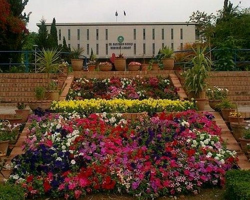
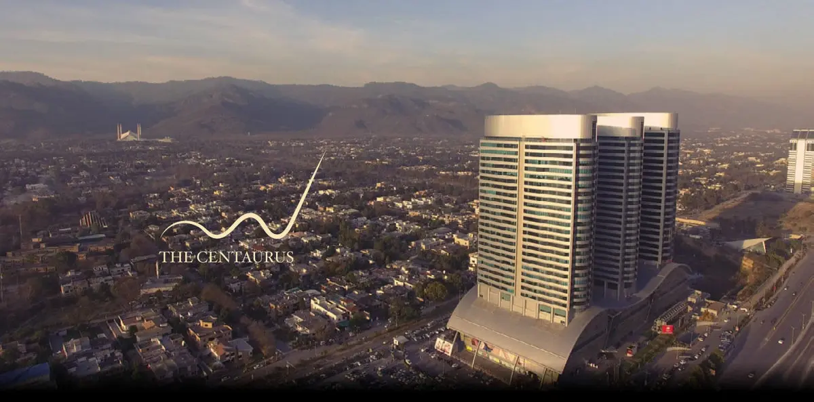

Islamabad Destination Guide
Daman-e-Koh

Daman-e-Koh is a picturesque viewpoint located in the Margalla Hills National Park. It offers panoramic views of Islamabad and is a popular spot for both locals and tourists. Here's what you can do at Daman-e-Koh:
Places to Visit:
- Enjoy the stunning viewpoint overlooking Islamabad.
- Explore the Margalla Hills National Park and its hiking trails.
Things to Do:
- Take a leisurely walk and enjoy the fresh air.
- Pack a picnic and have a meal with a view.
Local Tips:
- Visit during the evening to witness a beautiful sunset over the city.
- Be mindful of the natural environment and help keep the area clean.
Quaid-i-Azam University

Quaid-i-Azam University is a renowned educational institution in Islamabad. While you may not visit the university as a tourist, it's still a significant part of the city. Here's some information:
Academic Excellence:
Quaid-i-Azam University is known for its academic excellence, particularly in the fields of social sciences and natural sciences.
Local Tips:
- If you have academic or research interests, consider exploring the campus or attending a public lecture.
- Respect the university's rules and regulations while on campus.
Centaurus Mall

Centaurus Mall is a prominent shopping center in Islamabad, offering a wide range of shopping, dining, and entertainment options. Here's what you can do at Centaurus:
Places to Visit:
- Explore the various shops, from high-end brands to local boutiques.
- Visit the observation deck for panoramic views of Islamabad.
- Indulge in the diverse dining options, from international cuisines to local specialties.
Things to Do:
- Shop for fashion, electronics, and souvenirs.
- Enjoy a movie at the cinema inside the mall.
- Relax at a café and soak in the atmosphere.
Local Tips:
- Visit during the evening to experience the mall's vibrant nightlife.
- Use the convenient car parking facilities available.
- Don't miss the rooftop views of Faisal Mosque and the Margalla Hills.